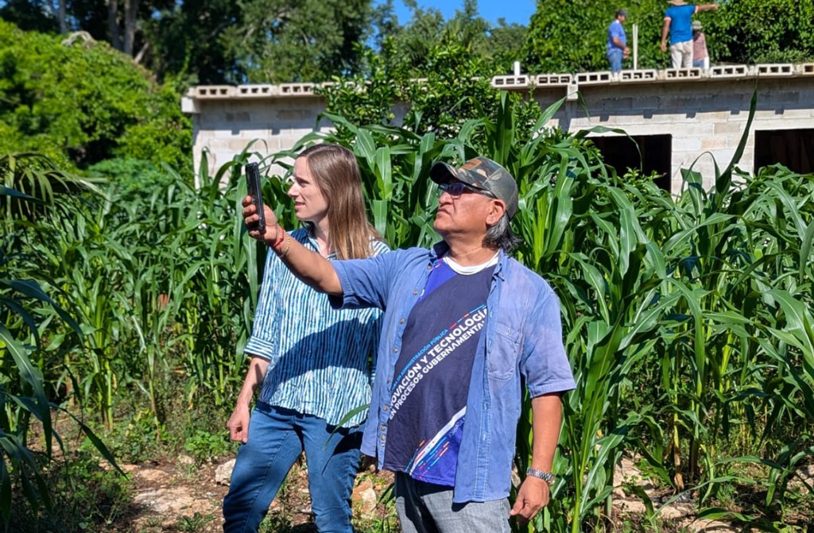

I find where your business loses money, then fix it
Cofounder of Prime AI ConsultantsMarketing Associate, Talent Connections, The Walt Disney Company
I help businesses find what is costing them money, then fix it. It starts with a conversation, so we can decide together what to fix, and only where it makes you money. That is how I serve businesses across Southern California.
You reach out through the contact form, and we have a first conversation about your business. No pitch, and no obligation. We decide together whether it makes sense to keep talking.
2
Understand
Then we meet, and I learn how your business actually runs. Where customers come in, where the work slows down, and which problems are costing you money. Together we agree what is worth fixing first, and in what order, before anything gets built.
3
Build
You get the fixes we agreed on, made for your business and owned by you. That can mean a website, a system that connects the tools you already use, or a custom tool made for your business. What already works stays untouched, and each change starts small in one place and proves itself before it goes any wider. The goal is measurable results, only where it makes you money.
Practice
Work you can use.
My work sits where design, technology, and the daily running of a business meet. I help organizations present themselves clearly, earn trust online, and keep the systems behind that presence working as the business grows and changes. Consistency and attention to detail shape how people find, understand, and rely on a business every day.
When a business works with me, the work is practical and theirs to use from the start. It can begin with a clear picture, in writing, of where customers and money are being lost, and what is worth fixing first. From there it becomes the things customers actually touch: a website that explains the business clearly and turns visits into calls and inquiries, a search presence that helps the right people find them, and the systems behind the scenes that make sure inquiries are answered and followed up instead of lost.
Some businesses need one of those pieces. Others need them working together as a whole. Either way, what is built is meant to be used, understood, and owned by the business, not rented from me or locked behind tools only I can run. The point is not a new website on its own. It is a business that is easier to find, easier to trust, and easier to run, because the problems that were costing it money are no longer in the way.
Selected Work
Selected work.
Each project below has its own page, where you can read its full story.
No. 01
Prime AI Consultants
Cofounder 2026 to Present · Santa Clarita, CA
As cofounder of Prime AI Consultants, I find where a business loses money and then fix it with a website, Google profile, and AI help, only where it makes money. For local businesses, that work starts with a conversation about your business.
The Walt Disney Company · Marketing Associate, Talent Connections 2025 to Present · Burbank

No. 03
Mayan Roots
Senior thesis project Santa Clara University
Completed in June 2025 as my senior thesis project at Santa Clara University, where I served as Project Manager and Front End Developer, Mayan Roots brought together our work on a trilingual app in Spanish, English, and Yucatec Maya to support Milpa farming around Tahcabo, Yucatán.
I am based in Santa Clarita. From there I work with service businesses across Santa Clarita and its neighborhoods, including Valencia, Castaic, Canyon Country, Newhall, and Saugus. I also work across the San Fernando Valley and Los Angeles, including Burbank, Glendale, Pasadena, Northridge, and Chatsworth. I meet in person in Santa Clarita and Los Angeles, and I work remotely across the rest of Southern California.
What kind of businesses do you help?
I help businesses across Southern California, from local shops and trades to professional firms and manufacturers. The work is not tied to an industry. It is tied to a problem: money being lost somewhere in how customers find you, reach you, or get followed up with. It starts with a conversation, so we can decide together what to fix, whether that is a rebuild, a system built around how your business actually runs, or AI placed where it genuinely helps, and only where it makes you money.
That matters because when a customer calls and no one answers, they simply call the next business, so a missed call is often a lost job.
AI is a tool here, not the product. A blanket AI system can run up monthly costs, tie a business to one provider, and put a robot on the line where a customer expected a person. I build the system underneath first, so the business owns it and can use the right level of AI for the job, instead of paying for the most powerful option by default.
I design and build websites, and my work now brings together Disney career sites with audits and rebuilds for local businesses through Prime AI Consultants.
Fernando RojasSanta Clarita, California
Story
What I do.
I am a consultant who builds. I look closely at how a business runs and how customers find it, work out what is costing it money, and then build the thing that fixes it, whether that is a website, a search presence, or a system behind the scenes. I stay with the work after it goes live, keeping it current and fixing what breaks. A lot of the building happens with AI tools, which is how a business my size gets work that used to take a whole team.
Today, that work takes two forms at once. At The Walt Disney Company, I build and maintain career sites in multiple languages as part of a global team in Talent Connections, while outside Disney I am cofounder of Prime AI Consultants, where we work with manufacturers, law firms, and local businesses on the problems that cost them money.
I will not call myself an AI expert. The tools change too fast for that word to hold much weight, and there is plenty I have not seen yet. What I have is years of daily work building with these tools, development experience on complex systems, and a clear view of where AI genuinely helps a business and where it does not. Most owners have had no reason to learn any of that. They have a business to run. So Prime starts with the business, not with a tool. We decide together which tools fit, if any do, and what gets built is specific to each business, because no two have the same problem.
Path
My time at Disney.
Jun 2025 to Apr 2026
Marketing and Digital Media InternTalent Connections, The Walt Disney Company.
April 2026 to Present
Marketing AssociateTalent Connections, The Walt Disney Company.
Education
Education.
BS, Web Design and EngineeringSanta Clara University · Graduated June 2025
Master of Liberal Arts in Computer ScienceHarvard Extension School · On a gap semester
Stanford Summer SessionCS 106B, Programming Abstractions · ORALCOMM 118, Public Speaking: Romancing the Room · 2023
AA, MarketingCollege of the Canyons
Skills
What I can do.
Websites and rebuildsA site that explains the business clearly and turns visits into calls and inquiries, yours to own and update.
Search and Google presenceYour Google Business Profile and local search, set up so the right people find you, including how AI answers describe you.
Systems behind the scenesThe tools you already use, connected so no inquiry goes unanswered or left unfollowed, and nothing that already works gets replaced.
AI help, where it fitsSystems built around how a business runs, with AI at the level the job needs, owned by the business instead of rented from one provider.
Career sites at scaleCareer sites in multiple languages, built and maintained as part of a global team at Disney.
Mobile developmentMayan Roots, my senior thesis at Santa Clara University: a trilingual app in Spanish, English, and Yucatec Maya, built to work without a signal for farmers in Yucatan.
This page brings together three case studies, for Disney, Mayan Roots, and Prime AI Consultants.
Case Studies
Case studies.
Each of these three projects has its own page.
No. 01
Prime AI Consultants
Cofounder 2026 to Present
As cofounder of Prime AI Consultants, I find where a business loses money and then fix it with a website, Google profile, and AI help, only where it makes money. For local businesses, that work starts with a conversation about your business.
Senior thesis project, Santa Clara University.Completed in June 2025.
Exhibit
What the thesis covers.
Research question
The thesis began with a single question. How can Yucatán’s Mayan agricultural heritage, above all the Milpa system, be preserved, and how can farmers in rural Yucatán be supported with an intuitive and culturally appropriate resource that asks little of technology and keeps working with or without an internet connection? The farmers in that question are the people the work was meant to serve, and the question set the terms for everything that followed.
The team
That question became a team project by Fernando Rojas, advised by Angela Musurlian and Silvia Figueira, and the project was completed in June 2025. I served as Project Manager and Front End Developer, from April 2024 to June 2025, and the work was also advised by Dr. Iván Batún Alpuche at Universidad de Oriente and Dr. Maia Dedrick, although we did not work directly with local farmers in this phase.
The app
What was built, and how it works.
What was built
From that work came a trilingual mobile app in Spanish, English, and Yucatec Maya, with Milpa agrarian cycle guidance, mapping and location services, weather and lunar calendar data, incident reporting, and a community page, bringing the guidance and the information around it together in one place.
Methods
The app was built with Flutter and Dart, with Firebase and Cloud Firestore behind it, and the Google Maps API centered on Tahcabo, Yucatán. Because the app stored data on the phone, it worked offline first, so it kept working without a signal on low spec devices, and high contrast display and text to speech made it easier to use. We did not finish digitizing the full GIS soil map in this phase, so we used Google Maps as the base for later GIS work, and we did not run a formal pilot test with rural communities before the thesis was finished.
The thesis
Preserving Yucatán’s Agricultural Heritage: A Mobile App for Agricultural Sustainability. Senior Design Project thesis, Santa Clara University, June 18, 2025, hosted at SCU Scholar Commons.
Santa Clara University News published a feature story on September 15, 2025, about the app, the mapping work, and the indigenous agricultural knowledge it draws on.
Cofounder. Prime is a consultancy, not a software vendor. We find where your business loses money, then fix it.
What Prime Does
The work, in full.
Prime does not sell a product off a shelf. We look for the specific problems costing a business money, and we fix those. AI is used only where it earns its place, and a simpler fix is used where that is better. What gets built depends on what the business actually needs, and it can include any of the following.
Website rebuilds and redesignsA site that explains the business clearly and turns visits into calls and inquiries.
Google Business Profile and search visibilityHow the business shows up on Google, in search, and in the answers AI tools give about it.
Review systemsReviews brought into one place, so they are easy to keep up with and easy to answer.
Follow up and speed to lead systemsInquiries answered quickly and followed up, instead of lost.
Custom toolsTools built for one business, such as quote calculators, intake forms, and one place to see open inquiries.
Connected systemsSystems that connect the tools a business already uses, so work stops falling between them.
AI help, as a later phaseSystems built around how the business runs, with AI at the level the job needs, owned by the business instead of rented from one provider.
How Prime Works
Three steps.
1. First step: an audit or a diagnostic
We look at the business the way a customer sees it, or the way the operation actually runs. You get the findings in writing, in plain language, and they are yours to keep. For a local business, the first step is an audit of how customers find you: on Google, on your website, and in AI answers. For manufacturing and for law and professional firms, it is a diagnostic that goes into how the operation runs day to day.
2. Consult
Then we sit down together and agree the exact problems worth fixing, and their order, before anything is built.
3. Custom solutions
We build the fixes we agreed on, starting small in one place and proving each change before it goes any wider. Each step earns the next one. You own everything that is built: the site, the profiles, and the systems. Nothing is rented, and nothing is locked behind tools only Prime can run. The goal is measurable results, only where it makes you money.
Experience
Areas of experience.
These are the areas Prime knows best, shown as experience and examples, not limits. What changes from one kind of business to another is the first step.
Manufacturing
Work with manufacturers begins with a diagnostic: going into how the operation actually runs to find where money is lost, before any fix is designed to fit it.
Law and professional firms
Work with law and professional firms also begins with a diagnostic, looking at how work and inquiries move through the firm before anything is changed.
Local businesses
Work with local businesses, such as plumbers, roofers, HVAC, garage door, realtors, restaurants, and shops, begins with an audit of how customers find the business: on Google, on its website, and in AI answers.
Principles
Rules Prime works by.
Keep your current system
The work is additive, never a replacement. Your records stay in the system you already use, and anything Prime adds logs back into that system, so there is not a second copy that drifts away from it. Because of that, nothing is replaced on day one.
Try it where only we can see it
A new tool runs after hours, or where only our team can see it, until we know how it behaves, and only then do we widen it on purpose, one step at a time.
One word stops it
We agree on one word in advance, and if you use that word, the automation stops right away, without you needing to call us to turn it off.
AI at the right level
A blanket AI system can run up monthly costs, tie a business to one provider, and put a robot where a customer expected a person. Prime builds the system underneath first, so the business owns it and can use the right level of AI for the job, instead of paying for the most powerful option by default.
Founders
The people behind Prime.
Fernando Rojas, CofounderFernando runs the diagnostics and builds the systems, the automations, and the integrations, and he trains staff to use what gets built.
Antonio Rojas, CofounderAntonio leads governance and review, checking each system against the rules the business sets before it goes any wider.
Start
Start with a conversation.
Tell us about your business through the contact page, or call 661-779-5568. The first step is a conversation, so we can decide together whether Prime is the right fit and what is worth looking at first.
Use the form below for a role, a collaboration, or a question about this portfolio, and if you run a business and want help, you can use that same form to connect.
Message
Send a message.
Contact actions
Contact Fernando
Call me at 661-779-5568, find me on LinkedIn and GitHub, or send a message with the form above.
When you use the contact form, you choose what to send. That can include your name, your email address, and the contents of your message. When anyone visits this site, the hosting provider also records basic technical information about the visit, such as which pages were requested and when.
How it is used
Information sent through the form is used only to reply to your inquiry, to discuss possible work, and to keep a record of that conversation. It is not sold, and it is not shared with other companies for their marketing.
Form and hosting providers
The contact form and the hosting for this site are run by outside providers. Those providers process the information only so your message can be delivered and this site can be served.
Cookies and analytics
This site does not use advertising tracking, and it does not set advertising cookies.
Your choices
You can ask what information is held about you, or ask for it to be deleted. Call 661-779-5568 or send a message through the contact form.
Changes
This policy may be updated from time to time. The current version will always be posted on this page, with the date of the most recent update shown at the top.